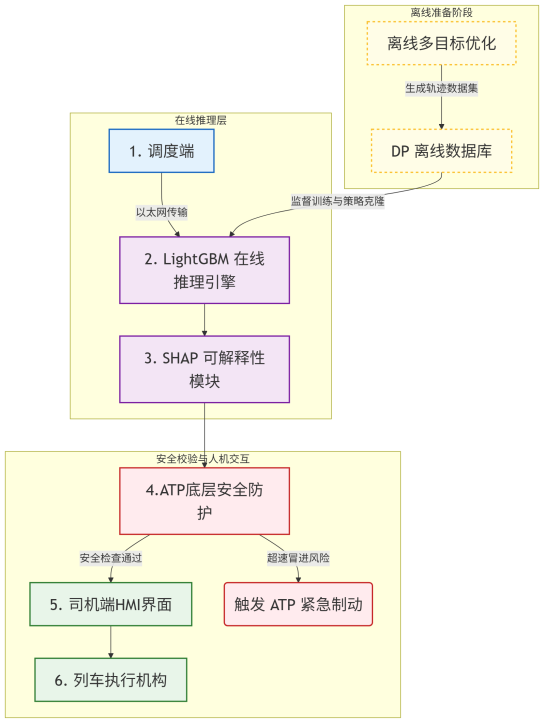
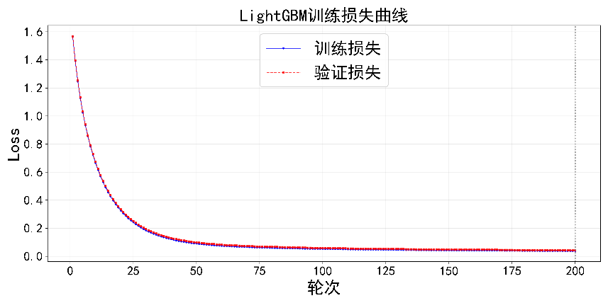
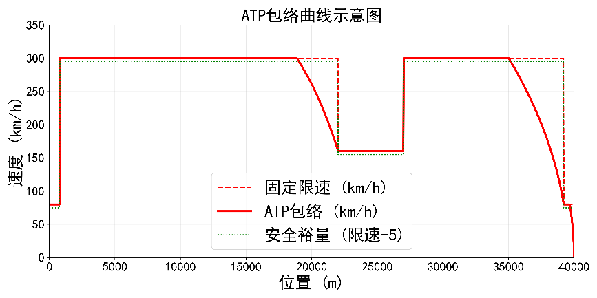
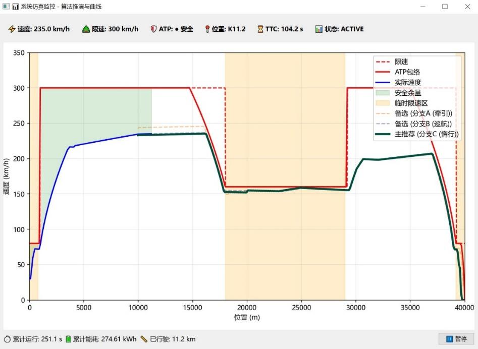
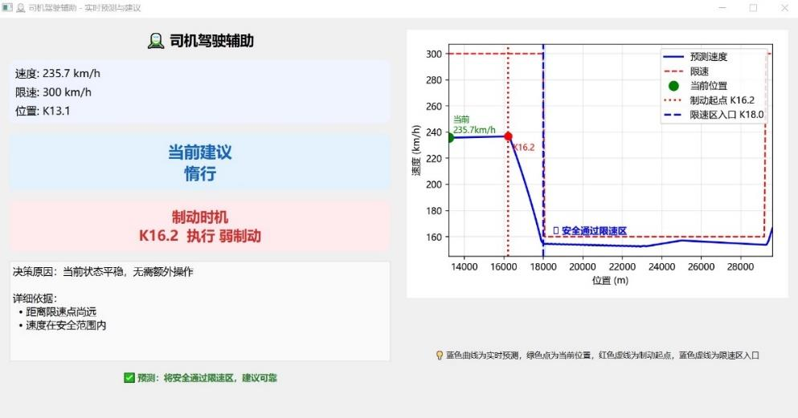

Intelligent Train Driving Assistance under Unexpected Temporary Speed Restrictions
A three-layer driving-assistance system that transfers offline dynamic-programming expertise into millisecond online decisions, protects every recommendation with an ATP safety envelope, and explains the model’s reasoning to the driver through SHAP-based decision cards.

Real-time replanning is difficult when speed restrictions appear unexpectedly.
Temporary speed restrictions can be introduced by severe weather, equipment failures, or other operational disruptions. When a train is only a few kilometres from the restricted section, the driving-assistance system must reconstruct a safe and efficient speed strategy quickly.
Classical global optimization such as dynamic programming can produce high-quality speed trajectories, but a new online solution may require minutes of computation. Purely data-driven alternatives can be fast, yet their black-box decisions are difficult to trust in a safety-critical railway environment.
Combine the global quality of offline optimization with the online speed of machine learning, while preserving an independent safety boundary and a human-readable explanation of each recommendation.
A layered architecture separates optimization, AI decision-making, safety protection, and human control.
Dynamic programming generated the expert behavior used for learning.
The benchmark environment used a 40 km high-speed railway line with continuous grades, station-area speed limits, multiple temporary restrictions, and CRH3 train parameters. The dynamic-programming state included position, speed, and the previous control action.
State and action discretization
- Position grid: 100 m
- Speed resolution: 0.5 km/h
- Six control actions: full traction, partial traction, cruise, coasting, weak braking, and service braking
- Hard transition constraints prevented non-smooth action jumps
Optimization objective
The stage cost balances traction energy, running-time deviation, and acceleration smoothness:
The train dynamics also account for Davis resistance, grade resistance, and speed-dependent adhesion.
Five categories of temporary-speed-restriction causes were crossed with seven starting positions and randomized environmental parameters. The resulting policy table was expanded into roughly ten million labelled samples with ten physical features.
On the 40 km benchmark line, the DP expert trajectory reduced cumulative traction energy by about 10% relative to a conventional constant-speed cruising strategy.
LightGBM reproduced the expert policy at online decision speed.
The behavior-cloning model takes a ten-dimensional physical state vector, including current position and speed, previous action, grade, speed-limit margin, distance to the next restriction, remaining distance, estimated remaining time, final-segment flag, and speed deviation.
After cleaning, the dataset contained approximately ten million valid labelled samples. It was split by scenario into an 80% training set and a 20% test set so that test scenarios remained unseen during training.
| Evaluation | Result | Interpretation |
|---|---|---|
| Six-action classification accuracy | 98.43% | High-fidelity imitation of DP expert actions |
| Single-step forward inference | 13 ms | Measured on a 14-core 2.6 GHz CPU |
| Relative computation speed | >1,000× | Compared with online dynamic programming |

The project selected LightGBM for fast inference, support for categorical features, and direct compatibility with tree-based SHAP explanations.
The AI recommendation never bypasses an independent ATP safety boundary.
Because behavior cloning remains a statistical learning method, the system introduces an independent Automatic Train Protection layer. The ATP module calculates an Emergency Brake Intervention (EBI) envelope: the highest speed from which the train can still brake safely to every downstream speed constraint.
The physical braking model also constrains traction and braking by a speed-dependent wheel–rail adhesion coefficient, ensuring that the safety envelope is based on achievable deceleration rather than an idealized value.

Across randomized simulation scenarios, the report records zero forced ATP interventions: the actual operating speed remained below the EBI envelope throughout the tested runs.

SHAP turns model attribution into a driver-readable decision card.
After LightGBM recommends an action, TreeExplainer computes local SHAP values for the current state. The system selects the three strongest feature contributions, determines whether each one pushes the decision positively or negatively, and maps the numerical attribution into natural-language operational reasons.

My work centered on building and validating the integrated decision-support pipeline.
I contributed to the project as a Tongji University team member, working on the real-time driving-assistance framework that combines DP-generated expert behavior, LightGBM policy cloning, ATP safety validation, SHAP-based explanation, and the integrated GUI workflow.
The portfolio description focuses on the components and quantitative results documented in the final technical report and competition application rather than presenting the project as an individual effort.
Project basis: final technical report and competition application for “智驭先锋——面向多变限速的基于行为克隆与可解释 AI 的列车智能驾驶辅助系统,” Tongji University, 2026. Original research figures are preserved on this page; English explanations are provided in the surrounding portfolio text.